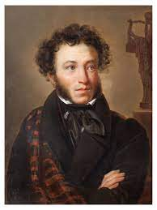

Captain's Daughter (1836)
Major ideas
- Genre of historical novel, in the style of Walter Scott (the first historical novel is titled Waverley (1814) - mix of historical and fictional characters (historical characters being secondary to fictional)
- Chance encounters and role of fate (feature of Romanticism)
- Mark Altshuller says that the action is usually set 60 years before
- Local color - the use of dialect words; Умет (inn) - local dialect of Russian; authenticity and realism as understood by Romantics
- Protagonist is caught between two fighting forces and finds positive things in both; romantic ambiguity
- Folk tale quality - historical figures as magical helpers
